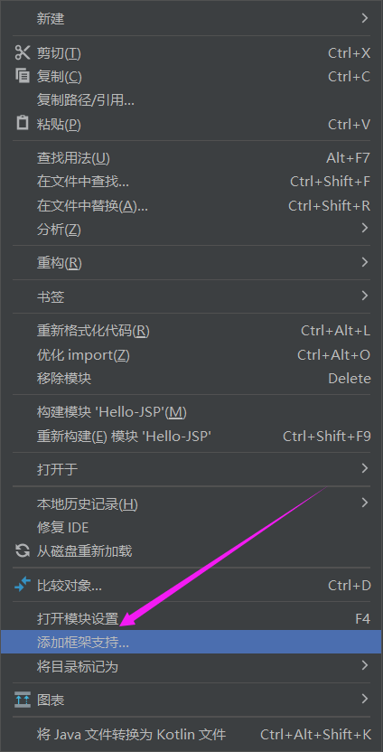
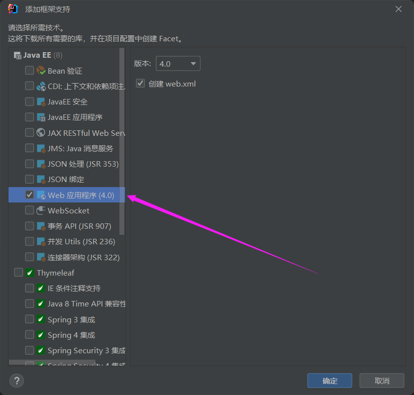
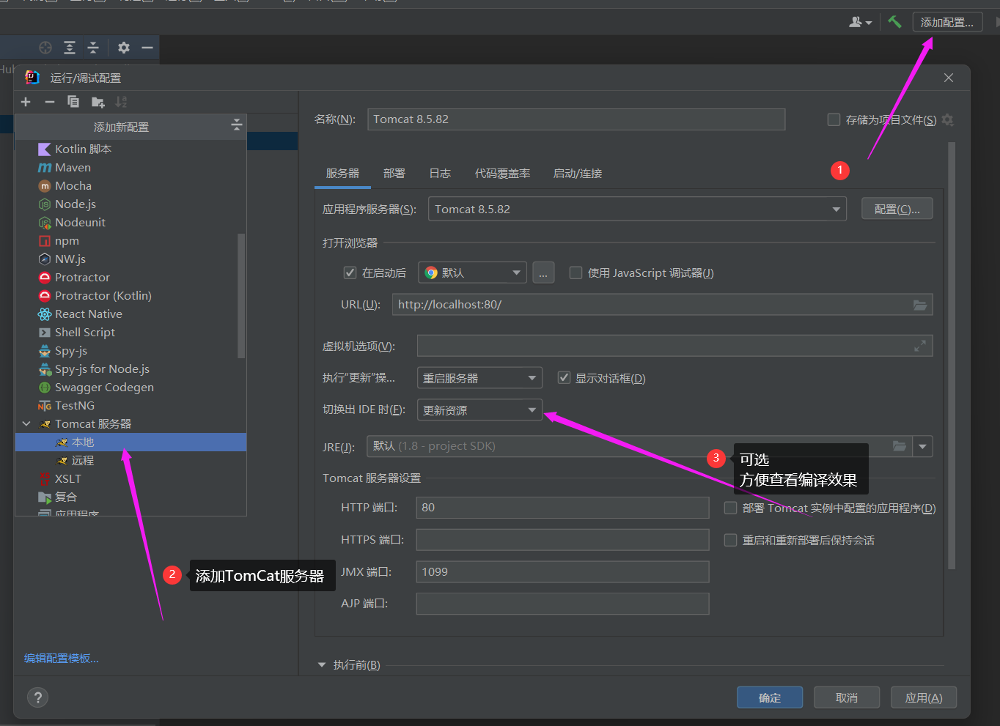

# JSP 简介
JSP全称Java Server Pages，是一种动态网页开发技术。
它使用JSP标签在HTML网页中插入Java代码。
标签语法：<% Java代码片段 %>
JSP是一种Java servlet，主要用于实现Java web应用程序的用户界面部分。网页开发者们通过结合HTML代码、XHTML代码、XML元素以及嵌入JSP操作和命令来编写JSP。
JSP通过网页表单获取用户输入数据、访问数据库及其他数据源，然后动态地创建网页。
JSP标签有多种功能，比如访问数据库、记录用户选择信息、访问JavaBeans组件等，还可以在不同的网页中传递控制信息和共享信息。
# 使用IDEA配置环境
前提：
- jdk
- tomcat
创建普通Java项目
添加框架支持
 配置TomCat
编写JSP
JSP 语法 →